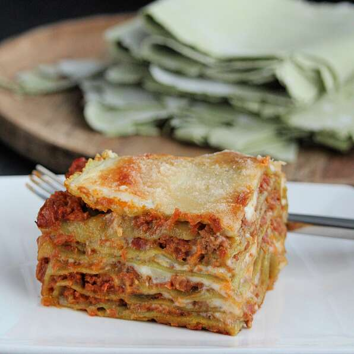

Lasagne

Description
Lasagne is multiple sheets of pasta filled with beef ragu in between each layer, with a red sauce.
Ingredients
Ragu:
- 200g ground Beef
- 1 cup plain tomato sauce
- 1/2 cup diced carrot
- 1/2 cup diced pumpkin
- 1/3 cup red wine
Pasta:
- 1/4 cup water
- 1 pinch salt
- 1/2 cup milk
- 5 sheets pasta
Steps:
- Sauteè carrot and pumpkin in pan over med-high heat with ground beef until fat has rendered. Add tomato sauce, mashing meat into small crumbles until it has browned.
- Add wine and bring to the boil, reduce heat to low and simmer for 1 hour, stirring occaisionally
- Start preparing pasta once sauce has been cooking for 1 1/2 hours. Divide pasta into 4 equal sections.
- Spread ragu over base of a square baking dish. Add a layer of pasta to the top. Repeat layers until you get to the top of the dish and finish with cheese on top
- Bake in oven at 175 degrees Cel. until sauce is bubbling and cheese has melted on top.